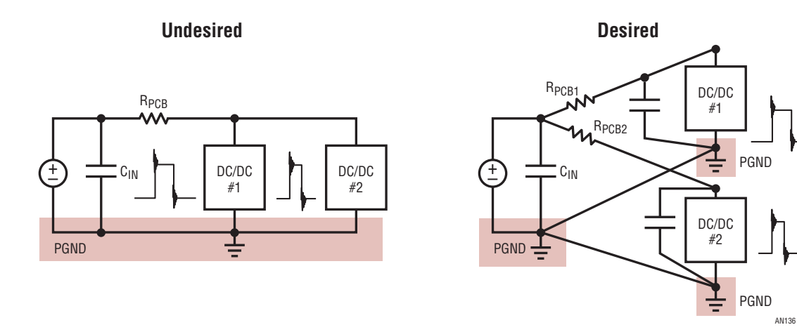
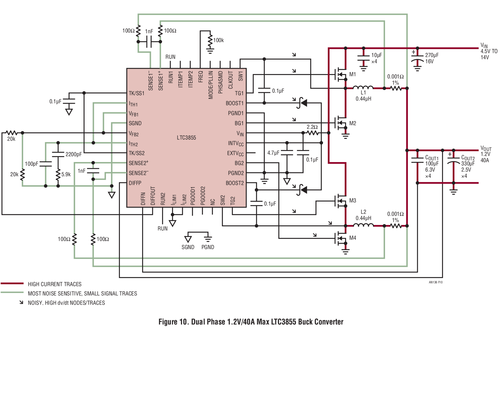
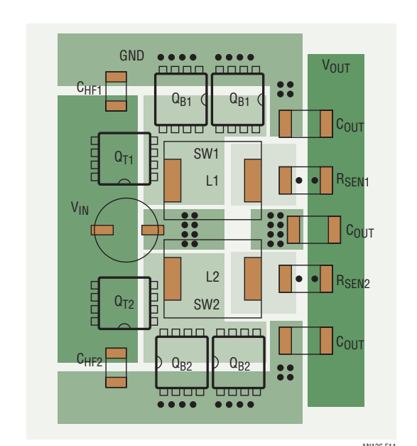

非隔离开关电源的 PCB 布局考量
Application Note 136 · Linear Technology（凌力尔特）· 2012 年 6 月 · 作者 Henry J. Zhang · 中文全译（插图保持原样）
这是一份"翻译件"，不是教材。AN-136 是开关电源布局领域被引用最多的原厂应用笔记之一，也是本技能站《PCB 与功率布局》一文的主要参考。本文按原文顺序完整翻译全部正文与 Table 1 布局检查清单，插图保持原样不重绘，方便对照英文原文精读。
阅读建议：方法论讲解看《PCB 与功率布局》，需要"原作者到底怎么说"的权威口径时回到本译文查对应章节。两文共用同一批图（Figure 1–14 编号一致）。
00导读：这份译文怎么用
在技能体系里的位置
本页属于「04 实现层 · PCB 与功率布局」的配套原文译文。它与体系内其他文档的关系：
- 主文档：《PCB 与功率布局》——把 AN-136 与 Kelvin 驱动、双脉冲实测等资料融合成方法论；本页提供其中反复引用的 AN-136 原始论述。
- 上游：《小信号建模》——AN-136 里"采样走线是最敏感的小信号"这类结论，对应峰值电流模式下采样噪声对环路的影响。
- 对照：《电路与系统分析》——寄生电感、容性耦合这些"隐形元件"的电路视角。
关于原文与译文
原文：PCB Layout Considerations for Non-Isolated Switching Power Supplies，Linear Technology Application Note 136（an136f，2012 年 6 月），共 14 页。Linear Technology 已被 ADI（Analog Devices）收购，原文现托管于 ADI 官网。译文忠实于原文的章节顺序与措辞；术语处理：hot loop 译作"热回路（脉冲电流环路）"、land pattern 译作"焊盘图形"、thermal relief 译作"热风焊盘（十字辐条连接）"、Kelvin sense 译作"开尔文采样"，首次出现时保留英文。图内文字为英文原样，未翻译。
图片来源声明
本文全部插图（Figure 1–14）直接取自原文 PDF 或 ADI 官网对应图，不重绘、不翻译图内文字，每张图下方标注出处链接。图 9–11 由原文 PDF 对应页面按矢量区域高清裁剪导出；其余来自 ADI 官网原图。图片版权归原作者所有，此处仅作学习引用。
01引言
第一次给原型电源板上电时，最好的消息莫过于：它不仅工作了，而且安静、凉爽。遗憾的是，事情并不总是如此美好。开关电源的一个常见问题是开关波形"不稳定"。有时波形抖动（jitter）严重到磁元件会发出人耳可闻的噪声。如果问题与印刷电路板（PCB）布局有关，定位起因往往非常困难。这就是为什么在开关电源设计的早期阶段就做好 PCB 布局至关重要——其重要性怎么强调都不为过。
电源设计者是最终产品中对该电源的技术细节和功能要求了解最深入的人。他/她应当从一开始就与 PCB 布局设计者紧密合作，处理好关键的电源布局。一个好的布局设计能优化电源效率、缓解热应力，而最重要的是，能把走线与器件之间的噪声和相互干扰降到最低。要做到这些，设计者必须理解开关电源中的电流导通路径与信号流向。以下讨论针对非隔离开关电源，给出正确布局设计需要考虑的要点。
02布局规划（Plan of the Layout）
2.1 电源在系统板上的位置
对于大型系统板上的嵌入式 DC/DC 电源，电源输出应尽量靠近负载器件，以最小化互连阻抗和 PCB 走线上的导通压降，从而获得最佳的电压调整率、负载瞬态响应和系统效率。如果系统采用强制风冷，电源还应靠近散热风扇或处于良好风道中，以限制热应力。此外，电感、电解电容等大体积无源器件不应阻挡通向低剖面贴片半导体器件（如功率 MOSFET、PWM 控制器等）的气流。为防止开关噪声干扰系统中的其他模拟信号，应尽量避免把敏感信号走线布在电源下方；否则，需要在电源层与小信号层之间放置一个内部地平面作为屏蔽。
必须指出：电源的这个位置安排与板面资源（board real estate）规划，应当在系统的早期设计/规划阶段就完成。遗憾的是，人们有时会把注意力先放在大系统板上其他更"重要"或更"有趣"的电路上。如果电源管理/供电被留到最后才考虑、被塞进板上剩下的任意空间，那显然无助于保证高效、可靠的电源设计。
2.2 层叠安排
在多层 PCB 上，非常理想的做法是把直流地、直流输入或直流输出电压层放置在大电流功率器件层与敏感小信号走线层之间。地和/或直流电压层为小信号走线提供交流地，把它们与噪声很大的功率走线、功率器件隔离开。
一般规则：多层 PCB 的地平面或直流电压平面不应被分割。如果分割不可避免，必须把平面内的走线数量和长度压到最少，并且这些走线应沿大电流流动的方向布线，以减小影响。
图 1a 和图 1c 给出了 6 层板与 4 层板在开关电源中不期望的层叠安排示例。在这些例子中，小信号层被夹在大电流功率层与地层之间，这种结构会增大大电流/高电压功率层与小模拟信号层之间的容性噪声耦合。为减小噪声耦合，图 1b 和图 1d 给出了 6 层板与 4 层板期望的层叠安排示例：这两个例子中，小信号层被地平面层屏蔽保护。始终在靠外的功率级层旁边安排一个地层，这一点很重要。最后，外部大电流功率层最好采用厚铜，以最小化 PCB 导通损耗与热阻抗。

图源：ADI（Linear）AN-136 Figure 1（图内文字为英文原样）
03功率级器件布局
开关电源电路可以分为功率级电路与小信号控制电路两部分。功率级电路包含导通大电流的器件。一般应先摆放这些功率器件，随后再把小信号控制电路安置到布局中合适的位置。本节讨论功率级器件的布局。
3.1 连续与脉冲电流路径——最小化高 di/dt 环路（热回路）的电感
大电流走线应当又短又宽，以最小化 PCB 电感、电阻和压降。这对流过高 di/dt 脉冲电流的走线尤其关键。图 2 标出了一个同步 Buck 变换器中的连续电流路径与脉冲电流路径：实线表示连续电流路径，虚线表示脉动（开关）电流路径。脉冲电流路径包括连接输入解耦陶瓷电容 CHF、上管（控制 MOSFET）QT、下管（同步 MOSFET）QB 及其可选并联肖特基二极管的走线。图 3a 展示了这些高 di/dt 电流路径中的寄生 PCB 电感。由于寄生电感的存在，脉冲电流路径不仅会辐射磁场，还会在 PCB 走线和 MOSFET 两端产生高电压振铃与尖峰。为最小化 PCB 电感，这个脉冲电流环路（热回路，hot loop）应布局成周长最小，并由短而宽的走线构成。高频解耦电容 CHF 应选用 0.1 μF 到 10 μF、ESL 与 ESR 极低的 X5R 或 X7R 介质陶瓷电容。容量更高的介质（如 Y5V）在电压和温度变化下容量会大幅缩水，因此不适合用作 CHF。

图源：ADI（Linear）AN-136 Figure 2

图源：ADI（Linear）AN-136 Figure 3
图 3b 给出了 Buck 变换器中关键脉冲电流环路（热回路）的布局示例。为限制电阻性压降并减少过孔数量，功率器件应放在板的同一侧，功率走线布在同一层。当确实需要把功率走线换到另一层时，应选择连续电流路径上的走线。当高电流环路中必须用过孔连接不同 PCB 层时，应使用多个过孔以最小化过孔阻抗。
3.2 Boost 变换器：另一半回路
类似地，图 4 展示了 Boost 变换器中的连续与脉冲电流环路（热回路）。此时高频陶瓷电容 CHF 应放在输出侧、靠近 MOSFET QB 与升压二极管 D。由开关管 QB、整流二极管 D 和高频输出电容 CHF 围成的环路必须最小化。图 5 给出了 Boost 变换器脉冲电流环路的布局示例。

图源：ADI（Linear）AN-136 Figure 4

图源：ADI（Linear）AN-136 Figure 5
3.3 实例：CHF 缺失引发的丢周期
为了强调解耦电容 CHF 的重要性，图 6 和图 7 给出一个同步 Buck 电路的真实案例。图 6a 是一块采用 LTC3729 两相、单 VOUT 控制器 IC 的双相电源布局：12 VIN 转 2.5 VOUT/最大 30 A。如图 6a 所示，空载时开关节点 SW1、SW2 与输出电感电流 iLF1 的波形都是稳定的。但当负载电流升高到 13 A 以上时，SW1 节点波形开始出现丢周期（missing cycles）；负载电流越大，问题越严重。

图源：ADI（Linear）AN-136 Figure 6
图 7 表明：在每个通道的输入侧各加一颗 1 μF 高频陶瓷电容就解决了问题。它把每个通道的热回路分离开并压到最小。即使负载电流达到最大值 30 A，开关波形依然稳定。

图源：ADI（Linear）AN-136 Figure 7
3.4 隔离并最小化高 dv/dt 开关区域
在图 2 和图 4 中，SW 节点电压以很高的 dv/dt 速率在 VIN（或 VOUT）与地之间摆动。该节点富含高频噪声分量，是一个很强的 EMI 噪声源。为最小化 SW 节点与其他噪声敏感走线之间的耦合电容，SW 的铜面积应尽量小。但另一方面，为了传导大的电感电流并为功率 MOSFET 提供散热，SW 节点的 PCB 面积又不能太小。通常更优的做法是在 SW 节点下方放置一块地铜区域，提供额外屏蔽。
3.5 足够的铜面积以限制功率器件热应力
在不为贴片功率 MOSFET 和电感配外部散热片的设计中，必须有足够的铜面积充当散热器。对于直流电压节点——如输入/输出电压与功率地——铜面积越大越好。多个过孔有助于进一步降低热应力。而对于高 dv/dt 的 SW 节点，SW 铜面积的取值是一个设计折中：一边是最小化 dv/dt 相关噪声，一边是为 MOSFET 提供良好的散热能力。
3.6 功率器件的正确焊盘图形——最小化阻抗
必须重视功率器件（低 ESR 电容、MOSFET、二极管、电感）的焊盘（land/pad）图形。图 8a 与图 8b 分别给出不期望与期望的功率器件焊盘图形示例。如图 8b 所示，对解耦电容而言，正、负过孔对应彼此尽量靠近，以最小化 PCB 等效串联电感（ESL）——这对低 ESL 电容尤其有效。大容量低 ESR 电容通常更贵；不恰当的焊盘图形和糟糕的布线会劣化其性能，从而推高整体成本。总体而言，期望的焊盘图形应当：降低 PCB 噪声、降低热阻抗，并为大电流器件最小化走线阻抗与压降。
大电流功率器件布局中一个常见错误，是对功率焊盘不当使用热风焊盘（thermal relief，即焊盘与平面之间用细辐条连接），如图 8a 所示。不必要地使用热风焊盘会增大功率器件的互连阻抗，导致更高的功率损耗，并削弱低 ESR 电容的解耦效果。如果过孔要传导大电流，必须使用足够数量的过孔以最小化过孔阻抗；同样，这些过孔也不应使用热风连接。

图源：ADI（Linear）AN-136 Figure 8
3.7 多路电源输入电流路径的分离
图 9 展示了板上多路开关电源共享同一输入电压轨的应用。当这些电源彼此不同步时，必须把输入电流走线分开，以避免不同电源之间通过公共阻抗产生噪声耦合。为每个电源就近放置本地输入解耦电容，其重要性次之（原文：less critical，但仍建议做）。

图源：ADI（Linear）AN-136 Figure 9（按原文 PDF 第 8 页矢量区域裁剪）
3.8 PolyPhase® 单输出变换器
对于 PolyPhase（多相交错）单输出变换器，尽量让每一相的布局对称。这有助于平衡各相之间的热应力。
3.9 布局设计实例——1.2V/40A 两相 Buck 变换器
图 10 给出一个设计实例：采用 PolyPhase 电流模式降压控制器 LTC3855 的 4.5 V 至 14 VIN 转 1.2 V/最大 40 A 两相同步 Buck 变换器。开始 PCB 布局之前，一个好做法是用不同颜色在原理图上把三类走线分别标出来：大电流走线、噪声很大的高 dv/dt 走线、敏感的小信号走线——让 PCB 设计者清楚它们之间的区别。图 11 给出该 1.2V/40A 电源功率器件层的功率级布局示例。图中 QT 为顶部控制 MOSFET，QB 为底部同步 MOSFET；还预留了一个可选的 QB 焊盘，用于输出更大电流。功率器件层的正下方放置了一个完整（实心）的功率地平面层。

图源：ADI（Linear）AN-136 Figure 10（按原文 PDF 第 9 页矢量区域裁剪）

图源：ADI（Linear）AN-136 Figure 11（按原文 PDF 第 10 页矢量区域裁剪）
04控制电路布局
4.1 控制电路的位置
控制电路应远离噪声大的开关铜区。位置选择上：对 Buck 变换器，控制电路宜靠近 VOUT+ 一侧；对 Boost 变换器，宜靠近 VIN+ 一侧——这两处的功率走线流的是连续电流。若空间允许，让控制 IC 与功率 MOSFET、电感保持一小段距离（0.5~1 英寸），因为后者既噪声大又温度高。然而，如果空间受限、控制器不得不贴近功率 MOSFET 和电感，就必须特别小心：用地平面或地走线把控制电路与功率器件隔离开。
4.2 信号地与功率地的分离
控制电路应拥有独立于功率级地的信号（模拟）地岛。如果控制器 IC 有分开的信号地（SGND）与功率地（PGND）引脚，二者应分别布线。对于内置 MOSFET 驱动器的控制器 IC，其引脚中的小信号部分应使用 SGND，如图 12 所示。SGND 与 PGND 之间只需要一个连接点，且最好把 SGND 返回到 PGND 平面上"干净"的一点——两个地可以在控制器 IC 正下方把各自的地走线相连来实现。图 12 展示了 LTC3855 电源首选的接地划分方式。本例中该 IC 有一个裸露的 GND 焊盘（exposed pad），应将其焊接到 PCB 上以最小化电气与热阻抗，并在该 GND 焊盘区域上放置多个过孔。
4.3 控制器 IC 的去耦电容
控制器 IC 的去耦电容在物理上应紧贴其引脚。为最小化连接阻抗，最好把去耦电容直接连到引脚上、不经过过孔。如图 12 所示，LTC3855 的下列引脚的去耦电容应就近放置：电流采样引脚 SENSE+/SENSE−、补偿引脚 ITH、信号地引脚 SGND、反馈分压引脚 FB、IC 电源引脚 INTVCC，以及功率地引脚 PGND。

图源：ADI（Linear）AN-136 Figure 12
4.4 最小化环路面积与串扰：噪声走线与敏感走线分开
两个或更多相邻导体会发生容性耦合：一根导体上的高 dv/dt 电压变化会通过寄生电容把电流耦合到另一根导体。为减小功率级对控制电路的噪声耦合，必须让噪声大的开关走线与敏感的小信号走线保持距离。可能的话，把噪声走线与敏感走线布在不同层，中间用一层内部地平面做噪声屏蔽。就 LTC3855 控制器而言，下列引脚带有高 dv/dt 开关电压：FET 驱动输出 TG、BG，SW 与 BOOST；下列引脚连接着最敏感的小信号节点：SENSE+/SENSE−、FB、ITH 与 SGND。如果这些敏感信号走线不得不靠近高 dv/dt 节点布线，就必须在这类信号走线与高 dv/dt 走线之间插入地走线或地平面来屏蔽噪声。
4.5 栅极驱动走线
栅极驱动信号宜用短而宽的走线布线，以最小化驱动路径阻抗。如图 13 所示，上管驱动走线 TG 与 SW 应成对布线、环路面积最小，以减小电感与高 dv/dt 噪声。类似地，下管驱动走线 BG 应紧贴一条 PGND 走线布线。如果在 BG 走线下方放置 PGND 层，下管的交流地回流会自动耦合在紧邻 BG 走线的路径上——交流电流总是沿环路阻抗最小的路径流动。这种情况下，下管栅极驱动不再需要单独的 PGND 回流走线。栅极驱动走线应尽少跨层，防止栅极噪声传播到其他层。

图源：ADI（Linear）AN-136 Figure 13
4.6 电流采样走线与电压采样走线
在所有小信号走线中，电流采样走线对噪声最敏感。电流采样信号的幅度通常小于 100 mV，与噪声幅度处于同一量级。以 LTC3855 为例，其 SENSE+/SENSE− 走线应以最小间距平行布线（开尔文采样），以降低拾取 di/dt 相关噪声的机会，如图 14 所示。此外，电流采样走线的滤波电阻和电容应尽可能靠近 IC 引脚放置——一旦噪声注入长长的采样线，就近滤波才最有效。如果使用电感 DCR 电流采样（R/C 网络），DCR 采样电阻 R 应靠近电感，而 DCR 采样电容 C 应靠近 IC。若 SENSE− 走线的回流路径上用到过孔，该过孔不得接触任何其他内部 VOUT+ 铜层——否则过孔可能传导大的 VOUT+ 电流，其产生的压降会扭曲电流采样信号。电流采样走线应避免布在噪声大的开关节点（TG、BG、SW、BOOST 走线）附近；可能的话，把地层放在电流采样走线与功率级走线所在层之间。
如果控制器 IC 有差分电压远端采样（remote sensing）引脚，其正、负远端采样走线同样应采用开尔文连接、彼此分开布线。

图源：ADI（Linear）AN-136 Figure 14
4.7 走线宽度选择
电流大小与噪声敏感度因控制器引脚而异，因此不同信号需要选择不同的走线宽度。一般而言，小信号网络可以走窄线，用 10~15 mil 宽的走线布线；大电流网络（栅极驱动、VCC 与 PGND）应使用短而宽的走线，这些网络建议至少 20 mil 宽。
05总结：功率设计布局检查清单
为总结本文的布局设计讨论，表 1 给出了图 10 所示两相 LTC3855 电源的布局检查清单样例。使用这样的清单，能帮助设计者确保最终成果是一个布局良好的电源设计。
使用说明：本清单为原文 Table 1《LTC3855 电流模式 Buck 电源布局检查清单样例》全译。逐条自查并勾选"是/否"；条目后的破折号行是原文给出的理由（comments）。清单以两相 LTC3855 为例，但绝大多数条目适用于任意非隔离开关电源。
| 编号 | 条目 / 说明 | 是/否 |
|---|---|---|
| 1 · 布局规划 | ||
| 1.0 | 理解系统的机械与热约束。在大系统板的前期规划阶段就为电源预留足够的板面空间，不要留到最后一步才做。 | □ |
| 1.1 | 电源输出电容在物理上尽量靠近负载。 – 最小化输出电容与快速瞬态负载之间的阻抗。 | □ |
| 1.2 | 电源靠近散热风扇布置；保证良好的风道路径。 – 使电源获得最佳冷却。 | □ |
| 1.3 | 在功率层与小信号层之间放置地层（图 1）。 – 为功率器件层电流提供回流路径，并屏蔽敏感小信号走线、隔离功率级开关噪声。 | □ |
| 1.4 | 在原理图上标色区分：大电流走线、噪声走线、敏感小信号走线。 | □ |
| 1.5 | 确定 PCB 顶、底面各放哪些器件。尽量把所有功率器件放在同一面。 | □ |
| 2 · 功率级布局 | ||
| 2.1 | 先摆放功率器件。摆放方式应使流经输入电容、功率 FET、电感、RSENSE 与输出电容的大电流路径长度最小。 – 最小化大电流路径上的 PCB 阻抗与导通损耗。 | □ |
| 2.2 | 为功率器件（电容、FET、二极管、电感、电流采样电阻）提供实心、低阻抗的焊盘图形。VIN、VOUT 与 GND 使用大面积铜平面（图 8）。 – 最小化走线阻抗与功率器件热应力。 | □ |
| 2.3 | 大电流功率层使用厚铜或多层并联。 – 最小化 PCB 导通损耗、降低热应力。 | □ |
| 2.4 | 功率走线确需换层时，选择低 di/dt 路径上的走线，并用多个过孔互连。 – 最小化噪声传播与层间连接阻抗。 | □ |
| 2.5 | 最小化包含上管 QT、下管 QB 与陶瓷输入滤波电容 CHF 的脉冲电流环路面积（图 3）。 – 最小化脉冲环路（热回路）电感并吸收开关噪声。 | □ |
| 2.6 | 最小化高 dv/dt 的 SW 节点面积，并对其隔离/屏蔽。 – 最小化来自高 dv/dt SW 节点的 EMI 噪声源。 | □ |
| 2.7 | 同一输入轨上有多路电源且彼此不同步时，分离各电源的输入电流路径（图 9），并为每路电源设置本地输入解耦电容。 – 避免电源之间通过公共阻抗耦合噪声。 | □ |
| 2.8 | PolyPhase 变换器：每一相尽量对称布局；每一相都有本地陶瓷解耦电容。 | □ |
| 3 · 控制电路布局 | ||
| 3.1 | 把控制电路放在安静的位置，靠近输出电容或输入电容。 – 最小化对控制电路的噪声。 | □ |
| 3.2 | 为接以下小信号引脚的器件使用独立的 SGND 地岛：ITH、SGND、SENSE+/SENSE−、FB、VDIFFOUT、FREQ、MODE/PLLIN、RUN、TK/SS、ILIM、PHASMD 与 PGOOD（图 12）。接地连接要短，直接连到 SGND 岛。 – 最小化对控制电路的噪声。 | □ |
| 3.3 | INTVCC 电容使用 PGND 接地（图 12）。 | □ |
| 3.4 | SGND 与 PGND 之间仅一个连接点，建议位置在 IC 正下方（图 12）。若 IC 有裸露接地/散热焊盘，将其焊到 PCB 上并用多个过孔连至其他 SGND/PGND 层。 – 最小化 SGND 噪声，并为栅极驱动电流提供低阻抗回流路径。 | □ |
| 3.5 | 以下引脚的陶瓷去耦电容应就近放在控制器同层并直接连接：SENSE+/SENSE−、ITH、SGND、FB、INTVCC 与 PGND（图 12）。 – 最小化连接阻抗，用高频电容实现最佳噪声解耦。 | □ |
| 3.6 | 电流采样走线——必须采用开尔文采样，SENSE+/SENSE− 走线紧密平行布线（图 14）。SENSE− 过孔不得触碰内部 VOUT+ 平面。SENSE+/SENSE− 走线须与以下网络隔离：TG、SW、BOOST 与 BG。SENSE+/SENSE− 引脚与其滤波电容之间用走线直接连接；滤波 C 必须紧贴 SENSE+/SENSE− 引脚。 – 最小化 SENSE+/SENSE− 电流采样环路的噪声拾取。SENSE+/SENSE− 是最敏感的小信号走线（< 75 mV）。 | □ |
| 3.7 | 远端电压采样走线——VOS+/VOS− 走线应成对一起布线。 – 最小化噪声与采样误差。 | □ |
| 3.8 | 栅极驱动走线——TG 与 SW 走线应成对布线、环路面积最小（图 13）。TG、SW 与 BG 走线尽量只布在一层上。 – 最小化来自高 dv/dt 栅极驱动走线的噪声源。 | □ |
| 3.9 | 敏感小信号走线与噪声走线/平面保持距离。最敏感的走线包括 SENSE+/SENSE−、FB、ITH 与 SGND；噪声走线/平面包括 SW、TG、BOOST 与 BG。可能的话，在噪声走线层与小信号走线层之间放置地走线/地层。 – 最小化噪声走线与小信号走线之间的容性噪声耦合。 | □ |
| 3.10 | 走线宽度——以下控制器走线至少 20 mil 宽：INTVCC、PGND、TG、BG、SW 与 BOOST。 – 最小化走线阻抗。 | □ |
06原文出处与版权说明
- 原文：Henry J. Zhang, PCB Layout Considerations for Non-Isolated Switching Power Supplies, Linear Technology Application Note 136, June 2012（文档编号 an136f，共 14 页）。
- 现托管方：Analog Devices（ADI 于 2017 年收购 Linear Technology）——AN-136 官方页面，可下载英文原版 PDF 对照阅读。
- 商标声明（原文照录）：L、LT、LTC、LTM、Linear Technology、Linear 标志与 PolyPhase 是 Linear Technology Corporation 的注册商标。所有其他商标均为其各自所有者的财产。
- 免责声明（原文大意）：Linear Technology Corporation 所提供的信息被认为是准确且可靠的，但对其使用不承担任何责任；对本文所述电路的互连是否侵犯现有专利权不作任何陈述。
© Linear Technology Corporation 2012. 译文与图片仅作个人学习引用，版权归原作者所有。